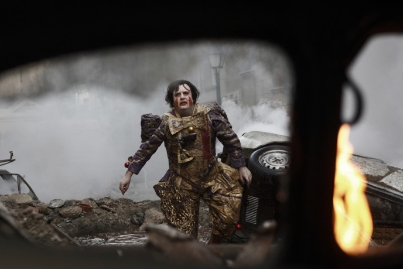
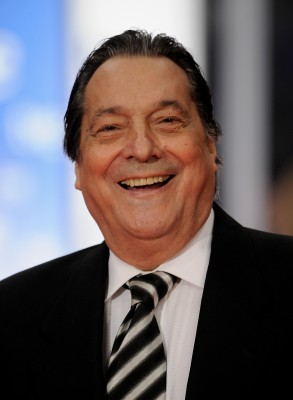

#8253 Mad Circus - Eine Ballade von Liebe und Tod
Alternativ: The Last Circus (Englischer Titel)


 IMDB-Wertung: 6.6 / 10
IMDB-Wertung: 6.6 / 10  Metascore: 0
Metascore: 0 
Ein Junge erlebt, wie sein Vater, Zirkusclown und Widerstandskämpfer gegen den Faschismus, im Bürgerkrieg von Franco-Anhängern getötet wird, und tritt als trauriger Clown in seine Fußstapfen. Mit einem fröhlichen Clown kämpft er um die Zuneigung einer betörenden Trapezkünstlerin. Durch Entwürdigung und Demütigung wird er zu einem Monster ohne Moral, das nicht nur seinem Rivalen das Gesicht zerfetzt, sondern auch sich selbst übelst zurichtet.
Jahr: 2010
Dauer: 105 Minuten
FSK: 18
Land: Spanien Studio: Koch MediaTonspuren:
Untertitel: Deutsch,
Auflösung: 1080p (1920x816) Größe: 5847 MB
Genre: Drama, Komödie
Regisseur: Álex de la Iglesia
Drehbuch: Álex de la Iglesia
Soundtrack: Roque Baños
Darsteller:
-  Carlos Areces als Javier
 Antonio de la Torre als Sergio
Antonio de la Torre als Sergio- Carolina Bang als Natalia
- Enrique Villén als Andrés
- Gracia Olayo als Sonsoles
-  Sancho Gracia als Coronel Salcedo
 Santiago Segura als Padre-Payaso tonto
Santiago Segura als Padre-Payaso tonto- Jorge Clemente als Javier (Joven 1943)
- Joaquín Climent als Padre de familia
- Terele Pávez als Dolores (Vet.)
- José Manuel Cervino als Secretario
 Javier Botet als Preso enloquecido
Javier Botet als Preso enloquecido Raúl Arévalo als Carlos (Chico cine)
Raúl Arévalo als Carlos (Chico cine)- Diego Calderón als Trapecista Machete (uncredited)
- Alexander Estrella als Soldado nacional (uncredited)
- Raphael als (archive footage) (uncredited)
- Manuel Tallafé als Ramiro
- Alejandro Tejerías als Motorista-fantasma
- Manuel Tejada als Jefe de pista
- Paco Sagarzazu als Anselmo
- Fernando Guillén Cuervo als Capitán miliciano
- Fofito als Payaso listo
- Sasha Di Bendetto als Javier (Niño 1937)
- Juan Viadas als Franco
- Ángel Acero als Locutor / Actor
- David Sánchez Calvo als Trapecista
- Juana Cordero als Madre de los niños
- Fernando Chinarro als Abuelo
- Luis Varela als Manuel (Veterinario)
- Isidro Montalvo als Amaestrador de osos
- Fran Perea als Soldado nacional
- Ignasi Vidal als Policía (Convoy)
- Luz Valdenebro als Mª Ángeles - Chica Cine
- Josu Ormaetxe als Millonario 1
- Josean Bengoetxea als Millonario 2
- Chusa Barbero als Señora enjoyada
- Fernando Soto als Médico
- Elsa Cabo als Bailarina en el Kojak
- Merche Romero als Bailarina en el Kojak
- Anita Torres als Bailarina en el Kojak
- Biaffra als Guardia civil (uncredited)
- Mikel Bustamante als Figurante cine / Guardia civil (uncredited)
- Sixto Cid als Bestia (uncredited)
- Ángel Cristo als Himself (archive footage) (uncredited)
- Torcuato Fernández Miranda als Himself (archive footage) (uncredited)
- Manuel Fraga als Himself (archive footage) (uncredited)
- Francisco Franco als Himself (archive footage) (uncredited)
- Luis Lobos Negros als Cliente cafetería Loessa (uncredited)
Datei: X:\FSK18-2010\Mad Circus - Eine Ballade von Liebe und Tod (2010, FSK18, 1920x816).mkv seit 13.02.2018
Festplatte: FSK18
 Es gibt insgesamt 35 Filme in der Gruppe 'FSK18-2010'
Es gibt insgesamt 35 Filme in der Gruppe 'FSK18-2010'